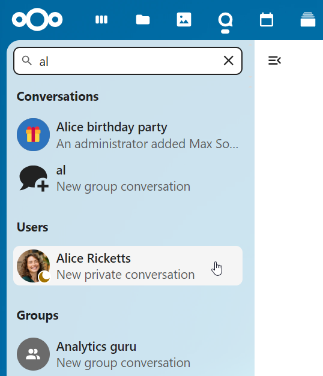
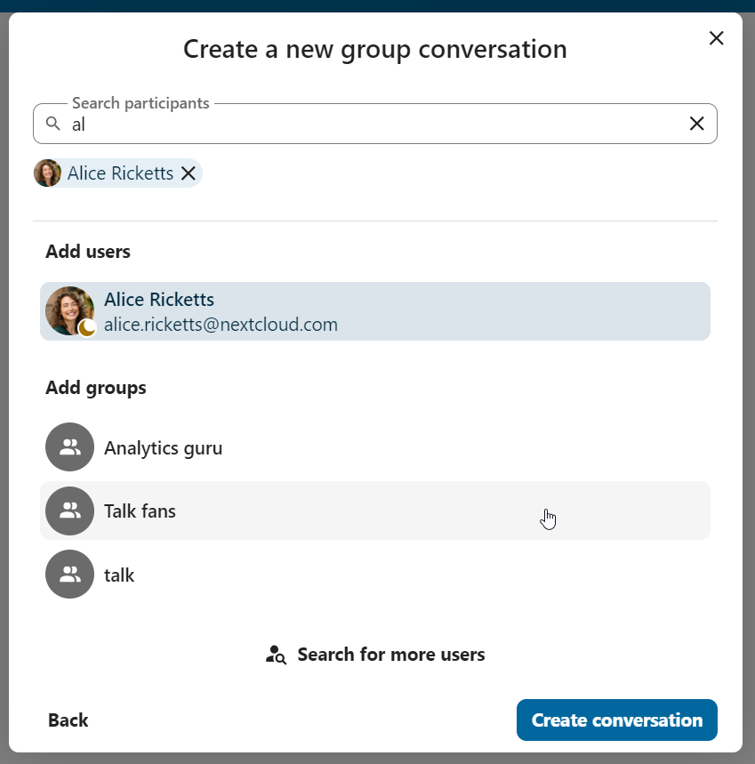
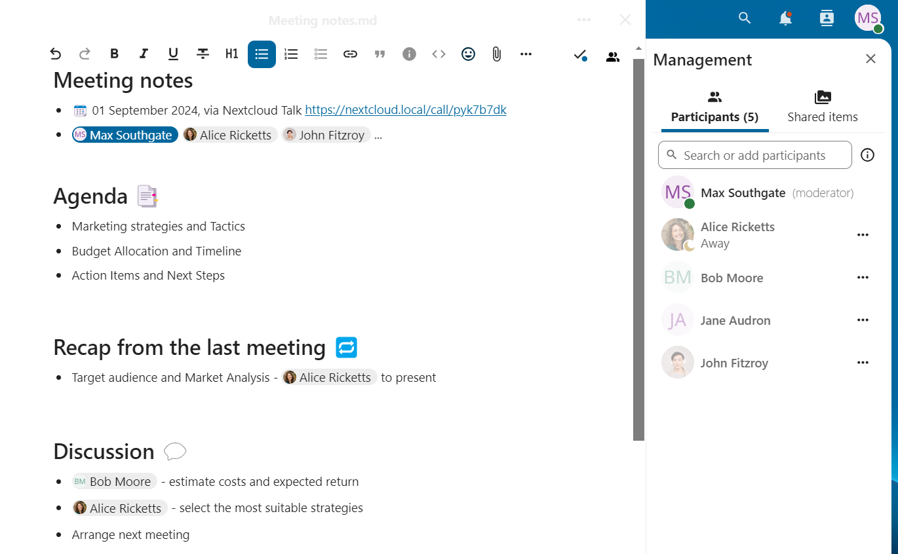
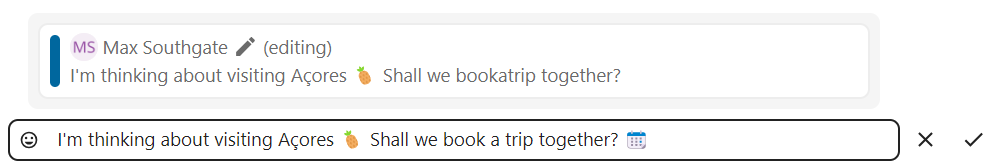
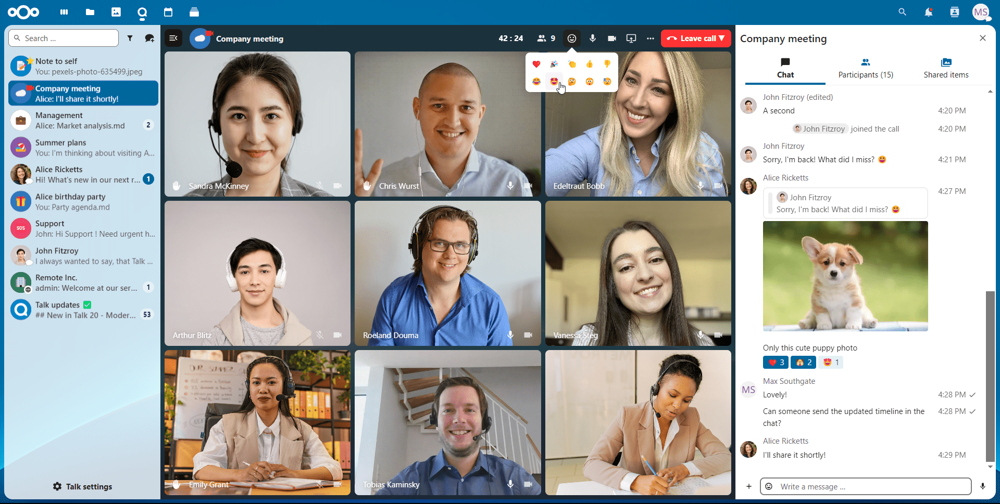

Noções Básicas de Nextcloud Talk
Nextcloud Talk permite que você converse e faça chamadas de vídeo em seu próprio servidor.
Bate-papos e chamadas ocorrem em conversas. Você pode criar qualquer número de conversas. Existem dois tipos de conversas:
** Conversas individuais. ** Aqui é onde você tem um bate-papo privado ou liga para outro usuário do Talk. Você não pode adicionar outras pessoas a esta conversa ou compartilhá-la com um link. Você inicia um bate-papo individual direto procurando por outro usuário na barra de pesquisa e clicando em seu nome.
** Conversas em grupo. ** Além da pessoa que criou a conversa, uma conversa em grupo pode ter qualquer número de pessoas nela. Uma conversa em grupo pode ser compartilhada publicamente com um link, para que usuários externos convidados possam participar de uma chamada. Ele também pode ser listado, para que outras pessoas em seu servidor Nextcloud possam entrar na conversa.
Criação de um bate-papo
You can create a direct, one-on-one chat by searching for the name of a user, a group or a team and clicking it. For a single user, a conversation is immediately created and you can start your chat. For a group or circle you get to pick a name and settings before you create the conversation and add the participants.
{kind=link}
If you want to create a custom group conversation, click the button next to the search field and filters button and then on Create a new conversation.

Você pode escolher um nome para a conversa, colocar uma descrição e configurar um avatar para ela (com foto ou emoji carregado) e selecionar se a conversa deve ser aberta para usuários externos e se outros usuários no servidor podem ver e junte-se à conversa.

Na segunda etapa, você consegue adicionar participantes e finalizar a criação da conversa.
{kind=link}
After confirmation you will be redirected to the new conversation and can start communicating right away.

Ver todas as conversas abertas
You can view all the conversations that you can join by clicking the button next to the search field and filters button and then on Join open conversations.

Filtre suas conversas
Você pode filtrar suas conversas usando o botão de filtro localizado ao lado do campo de pesquisa. Existem duas opções de filtragem: 1. Filtrar menções não lidas: Esta opção permite visualizar conversas em grupo com menções não lidas ou conversas individuais não lidas. 2. Filtrar mensagens não lidas: esta opção permite visualizar todas as mensagens não lidas em todas as conversas ingressadas.

Você pode limpar o filtro no menu de filtros.

Compartilhando arquivos em um bate-papo
Você pode compartilhar arquivos em um bate-papo de 3 maneiras.
Primeiro, você pode simplesmente arrastar e soltar no chat.

Em segundo lugar, você pode selecionar um arquivo de seus Arquivos Nextcloud ou de um gerenciador de arquivos, escolhendo o pequeno clipe de papel e selecionando de onde deseja escolher o arquivo.


You can add more files until you are done and decide to share the files. You can also add a text caption to your shared files, providing a brief description or context.

Todos os usuários poderão clicar nos arquivos para visualizá-los, editá-los ou baixá-los, independentemente de possuírem uma conta de usuário. Os usuários com uma conta terão o arquivo compartilhado automaticamente com eles, enquanto os usuários convidados externos os compartilharão como um link público.
{kind=link}
Inserindo emoji
Você pode adicionar emoji usando o seletor à esquerda do campo de entrada de texto.

Editing messages
You can edit messages and captions to file shares up to 6 hours after sending.
{kind=link}
Using Markdown
You can enhance your messages with a markdown syntax support. See list for usage:
Headings and dividers
# Heading 1
## Heading 2
### Heading 3
#### Heading 4
##### Heading 5
###### Heading 6
Heading
===
Normal text
***
Normal text
Inline decorations
**bold text** __bold text__
*italicized text* _italicized text_
`inline code` ``inline code``
```
.code-block {
display: pre;
}
```
Lists
1. Ordered list
2. Ordered list
* Unordered list
- Unordered list
+ Unordered list
Quotes
> blockquote
second line of blockquote
Task lists
- [ ] task to be done
- [x] completed task
Tables
Column A | Column B
-- | --
Data A | Data B
Setting reminder on messages
You can set reminders on specific messages. If there’s an important message you want to be notified about later, simply hover over it and click on the reminder icon.

In the submenu, you can select an appropriate time to receive a notification later.

Respondendo a mensagens e muito mais
Você pode responder a uma mensagem usando a seta que aparece quando você passa o mouse sobre uma mensagem.

No menu ... você também pode escolher responder em particular. Isso abrirá um bate-papo individual.

Aqui você também pode criar um link direto para a mensagem ou marcá-la como não lida para voltar para lá na próxima vez que entrar no chat. Quando for um arquivo, você pode ver o arquivo em Arquivos.
Silent messages
If you don’t want to disturb anyone in the middle of the night, there is a silent mode for chatting. While it is enabled, other participants will not receive notifications from your messages.

Gerenciando uma conversa
Você é sempre moderador em sua nova conversa. Na lista de participantes você pode promover outros participantes a moderadores usando o menu ... à direita de seu nome de usuário, atribuir a eles permissões personalizadas ou removê-los da conversa.
Alterar as permissões de um usuário que ingressou em uma conversa pública também o adicionará permanentemente à conversa.

Os moderadores podem configurar a conversa. Selecione Configurações de conversa no menu ... da conversa na parte superior para acessar as configurações.

Aqui você pode configurar a descrição, acesso de convidado, se a conversa está visível para outras pessoas no servidor e muito mais.

Messages expiration
A moderator can configure message expiration under the Conversation settings within the Moderation section. Once a message reaches its expiration time, it is automatically removed from the conversation.
The available expiration durations are 1 hour, 8 hours, 1 day, 1 week, 4 weeks, or never (which is the default setting).

Iniciando uma chamada
Durante uma conversa, você pode iniciar uma chamada a qualquer momento com o botão Iniciar chamada. Outros participantes serão notificados e poderão participar da chamada.

Se outra pessoa já iniciou uma chamada, o botão mudará para um botão verde Juntar-se ao bate-papo.

Durante uma chamada, você pode silenciar seu microfone e desabilitar seu vídeo com os botões do lado direito da barra superior, ou usando os atalhos M para silenciar o áudio e V para desabilitar o vídeo. Você também pode usar a barra de espaço para alternar o mudo. Quando você estiver silenciado, pressionar espaço irá reativar o som para que você possa falar até soltar a barra de espaço. Se você estiver com o som ativado, pressionar espaço irá silenciá-lo até que você solte.
Você pode ocultar seu vídeo (útil durante um compartilhamento de tela) com a pequena seta logo acima do fluxo de vídeo. Traga de volta com a pequena flecha novamente.
Você pode acessar suas configurações e escolher uma webcam diferente, microfone e outras configurações no menu ... na barra superior.

From media settings dialog, you can also change the background of your video.

Você pode alterar outras configurações na caixa de diálogo Configurar bate-papo.
{kind=link}
Iniciando um compartilhamento de tela.
You can click the monitor icon on your video stream to share your screen. Depending on your browser, you will get the option to share a monitor, an application window or a single browser tab. If video from your camera is also available, other participants will see it in a small presenter view next to the screen share.

Alterando a visualização em uma chamada
Você pode alternar a visualização em uma chamada com o pequeno ícone de quatro blocos no canto superior direito entre visualização promovida e visualização em grade. A visualização em grade mostrará todos igualmente grandes e se as pessoas não couberem na tela, aparecerão botões à esquerda e à direita que permitem navegar.
{kind=link}
A visualização promovida mostra o alto-falante grande e outros em uma linha abaixo. Se as pessoas não couberem na tela, aparecerão botões à esquerda e à direita que permitem navegar.